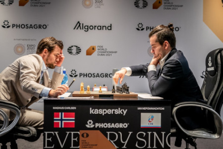

A sakkvilágbajnokság a sakk világbajnokának személyét eldöntő verseny. Férfiak és nők is indulhatnak rajta, de eddig mindig férfiak voltak a világbajnokok. A nők közül a világbajnoki címre a magyar Polgár Juditnak volt eddig a legnagyobb esélye.
Magnus Carlsen és Ian Nepomniachtchi játszik vilábajnoki meccset
A sakkvilágbajnokságok történetét általában 1886-tól számítják, amikor a világ két legerősebbnek tartott játékosa csapott össze, hogy kiderüljön, melyikük a jobb (lásd Sakkvilágbajnokság 1886-ban). Ezután 1946-ig a világbajnokság informális alapon folyt és a kihívóknak le kellett győzniük a világbajnokot, hogy megszerezzék ezt a címet.
1948-tól 1993-ig a világbajnokságot a FIDE, a sakkozók nemzetközi szervezete szervezte. 1993-ban az akkori világbajnok, Garri Kaszparov elszakadt a FIDÉ-től és másik világbajnokságot alapított. Egészen 2006-ig két rivális világbajnokság létezett és két világbajnoki cím is, de a 2006-os sakkvilágbajnokságon egyesítették őket.
Sakkvilágbajnokok
Egyedüli világbajnokok, 1886-1993Súgó
A táblázatban az 1886 és 1993 közti sakkvilágbajnokok nevét, világbajnokságuk idejét és országát olvashatja.
Név
Évek
Ország
Wilhelm Steinitz
1886-1894
Osztrák-Magyar Monarchia, Amerikai Egyesült Államok
Emanuel Lasker
1894-1921
Németország
José Raúl Capablanca
1921-1927
Kuba
Alekszandr Aljechin
1927-1935, 1937-1946
Szovjetunió, Franciaország
Max Euwe
1935-1937
Hollandia
Mihail Botvinnik
1948-1957, 1958-1960, 1961-1963
Szovjetunió(Oroszország)
Vaszilij Szmiszlov
1957-1958
Szovjetunió(Oroszország)
Mihails Tāls
1960-1961
Szovjetunió(Lettország)
Tigran Petroszján
1963-1969
Szovjetunió(Örményország)
Borisz Szpasszkij
1969-1972
Szovjetunió(Oroszország)
Robert J. Fischer
1972-1975
Amerikai Egyesült Államok
Anatolij Karpov
1975-1985
Szovjetunió(Oroszország)
Garri Kaszparov
1985-1993
Szovjetunió
FIDE-világbajnokok, 1993-2006Súgó
A táblázatban az 1993 és 2006 közti sakkvilágbajnokok nevét, világbajnokságuk idejét és országát olvashatja, akik A FIDE által rendezett világbajnokságokot nyerték meg.
Név
Évek
Ország
Anatolij Karpov
1993-1999
Oroszország
Alekszandr Halifman
1999-2000
Oroszország
Visuvanátan Ánand
2000-2002
India
Ruszlan Ponomarjov
2002-2004
Ukrajna
Rustam Qosimjonov
2004-2005
Üzbegisztán
Veszelin Topalov
2005-2006
Bulgária
Klasszikus világbajnokok, 1993-2006Súgó
A táblázatban az 1993 és 2006 közti klasszikus sakkvilágbajnokok nevét, világbajnokságuk idejét és országát olvashatja.
Név
Évek
Ország
Garri Kaszparov
1993-2000
Oroszország
Vlagyimir Kramnyik
2000-2006
Oroszország
Egyedüli világbajnokok, 2006-Súgó
A táblázatban a 2006 utáni sakkvilágbajnokok nevét, világbajnokságuk idejét és országát olvashatja.